Moneda: Yuan (CNY / RMB) · Vuelo: Swiss Air · BCN→ZRH→PEK / SHA→ZRH→BCN · Metro: Muy eficiente en Beijing, Xi'an y Shanghai · Taxis: A veces no quieren coger turistas; negociar precio antes o usar rickshaw · Trenes de alta velocidad: Llegar 45 min. antes · Pasar control de seguridad con 30 min. de antelación · Comprar tickets en taquillas con la frase en chino preparada · Cambio de dinero: Solo en Bank of China (única entidad que cambia divisas a extranjeros) · Internet: Google, Facebook y muchos servicios occidentales bloqueados en China
Barcelona → Zúrich → Pekín
Vuelo ZRH → PEK: Swiss Air · Salida 13:20h · Llegada 00:05h (día siguiente · hora española 23:15h)
Pekín — Tiananmen · Ciudad Prohibida · Torres
Del hotel a Tiananmen: Metro 1 parada a Qianmen en la misma línea 2 (evita 2 km caminando)
NOVOTEL Beijing Xin Qiao
1 Chong Wen Men Xi Da Jie · Frente a la salida A del metro · Dejar maletas en recepción al llegar
Plaza Tiananmen — Puerta de Qian Men a Ciudad Prohibida
Puerta de Qian Men (8:30–16:30h, 20 yuanes): dividida en dos partes: al norte el Zhengyangmen con vistas a la plaza y el museo de historia de Beijing; enfrente la Torre de la Flecha (Jian Lou, 40 m), del reinado del emperador Yongle (s. XV). Mausoleo de Mao (8:30–11:30h, gratuito): cuerpo embalsamado. Dejar bolsos y cámaras en un edificio a la derecha (60 yuanes). Monumento a los Héroes del Pueblo: obelisco de 37 m erigido en 1958. Gran Salón del Pueblo (9–15h, 30 yuanes): sede del gobierno, 24 salas con los nombres de las provincias, estrella roja en el techo. Puerta de Tiananmen (8:30–16:30h, 15 yuanes): conserva el retrato de Mao de 6×4,5 m.
Ciudad Prohibida — Gugong
Construida en 1420, donde gobernaron 24 emperadores durante 500 años hasta 1912. Abierta al público en 1949. Recorrido de sur a norte: Puerta Wu Men (el emperador asistía a ceremonias de año nuevo desde el balcón) → 5 puentes de mármol (símbolo de las 5 virtudes del confucionismo) → Puerta de la Suprema Armonía (leones chinos guardianes) → Calzada de mármol con dragones (reservada para el carruaje imperial) → calderas de bronce → reloj de sol imperial → Salón de la Suprema Armonía (el más grande, donde se coronaba al emperador) → Salón de la Armonía Media → Salón de la Armonía Preservada → Salida por la Puerta del Guerrero Divino.
Torre del Tambor + Torre de la Campana
Torre del Tambor: 47 m de altura, color rojo con tejado verde. Tambores en escaleras empinadas (quedaba 1 de los 24 originales). Tocan 5 minutos cada media hora, última vez a las 17h. Grandes vistas desde la terraza. Torre de la Campana: la actual es de 1747; la campana dejó de sonar en 1924 pero se conserva la campana de bronce de 20 m.
Lotus Lane — Barrio del Lago Hou Hai
Continuar por abajo y a la derecha desde las torres. La calle desemboca en el lago Qian Hai. Zona llena de restaurantes de cocina tradicional e internacional inspirados en arquitectura china. Bares de copas, terrazas, música en directo alrededor del pequeño lago. De noche es aún mejor con las luces multicolor.
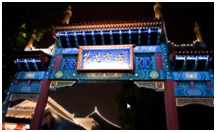
Muralla China — Mutianyu · Estadio Olímpico · Wangfujing
Estadio Olímpico "Nido de Pájaro" + Cubo de Agua
Panorámica del Estadio Olímpico: cubierto por una membrana transparente, 330 m de largo, 220 m de ancho y 69 m de altura. Junto a él el edificio destinado a la piscina olímpica (el "Cubo de Agua"), una gran burbuja cuadrada. Visita a una fábrica donde trabajan el Jade.
Gran Muralla China — Tramo Mutianyu 慕田峪
Tramo menos visitado y muy bien conservado. El telecabina deja en la torre 7 y se puede caminar hasta la 14. Coger la cabina para llegar arriba y tirar hacia la izquierda. Recorrer sus torres y trepar sus empinados desniveles. Después de 2h en la muralla, comida con menú chino en restaurante de la zona. A continuación, visita al Tea House Dr. T para presenciar la ceremonia del té.
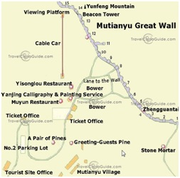
Calle Wangfujing — Mercado Nocturno
Mercado nocturno con brochetas exóticas en la Wanfujin Snack Street. Fácil de localizar por el gran arco decorado con farolillos rojos. Ver de lejos la Iglesia de San José (ocupa antigua residencia jesuita desde 1655).
Templo del Cielo · Templo de los Lamas · Palacio de Verano · Ópera de Pekín
Templo del Cielo — Tiantan
Ir a primera hora. Tres edificios principales: Salón de Oración por la Buena Cosecha (edificio circular de 30 m de diámetro y 38 m de altura sobre 3 terrazas de mármol blanco, 28 pilares de madera, sin ninguna viga — si te sitúas en el centro y susurras se oye nítidamente alrededor). Altar Circular del Cielo (3 plataformas de mármol al aire libre con 9 peldaños cada una — el 9 es el número de los emperadores; se considera el centro del mundo). Bóveda Imperial del Cielo (donde los emperadores rendían homenaje a sus antepasados). El recinto tiene más de 60.000 árboles, el más famoso de más de 500 años y el mítico ciprés de los 9 dragones.
Templo de los Lamas — Yonghe Gong
Uno de los monumentos budistas más importantes de Beijing. Del siglo XVII; en 1744 se convirtió en monasterio. Multitud de salones, cada uno con uno o varios budas que representan cosas distintas (longevidad, pasado, presente, futuro, medicina…). El último salón contiene el buda más grande del mundo reconocido por el Libro Guinness.
Palacio de Verano — Yiheyuan
Comer en el McDonald's al salir del metro. Ruta desde Entrada Oeste: Subir hasta el Barco de Mármol (símbolo de la corrupción de la emperatriz Cixi) → coger barco (10 yuanes) que cruza el Lago Kunming (3/4 del palacio, excavado por 100.000 trabajadores) → Puente de los 17 Arcos → Isla del Lago Sur (Templo del Rey Dragón) → museo con figuras de jade antes de la puerta oeste. El Gran Corredor (más de 14.000 pinturas con escenas de la historia de China) fue construido para que la emperatriz paseara sin sol. Subir a la Colina de la Longevidad para ver la Pagoda del Buda y las magníficas vistas del palacio.
Ópera de Pekín — Beijing Liyuan Theatre
Qianmen Jianguo Hotel, 175 Yongan Road. Entradas reservadas. Obra "Beijing Opera Highlights Show", 180 yuanes (Red Zone, filas 1-2 o 5-6, con servicio de té y snacks en mesa). Dura hasta las 20:45h. Traducción en inglés con subtítulos.
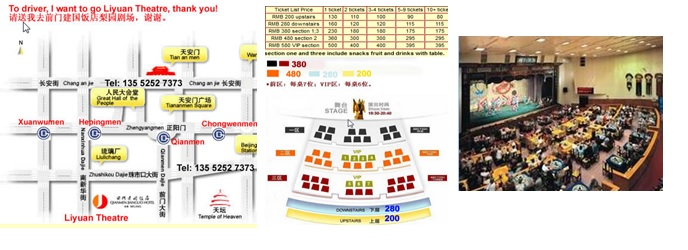
Xi'an — Torre de la Campana · Torre del Tambor · Gran Pagoda del Ganso Salvaje
Bus aeropuerto: Passenger Service Center · Andén 5 T2 · Cada 30 min · 26 yuanes · Bajarse en la 2ª parada (Torre de la Campana) · Taxi al hotel: 13 yuanes
Ibis Xi'an Heping Gate
59 Heping Road · 西安宜必思和平门 · Comer en el hotel el bocadillo del avión
Torre de la Campana 钟楼
Triple cubierta de color verde, emplazada en este lugar desde 1582 y restaurada en 1739. Base cuadrada de 37 metros. Marca el centro geográfico de Xi'an: desde aquí parten las cuatro arterias principales (Xi, Dong, Nan y Bei Dajie). Alberga la gran campana Jingyung de la dinastía Tang. Los chinos pagan para tocarla y pedir deseos de felicidad. Cada hora concierto de 20 minutos con todo tipo de campanas.
Torre del Tambor 鼓楼 — Gulou
Del año 1380. El gigantesco timbal avisaba del cierre de las puertas de las murallas al crepúsculo. Pequeño museo dedicado al tambor con exhibición de percusión de 20 min (los tambores retumban en todo el edificio). Cada tambor representa aspectos de la vida diaria. El mítico tambor se guarda en el interior.
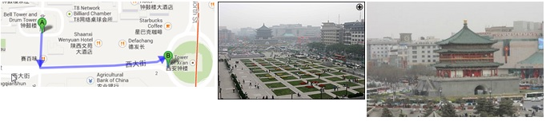
Gran Pagoda del Ganso Salvaje 大雁塔 + Fuente Musical
Edificio escalonado de 7 pisos y 64 m construido en 648 durante la dinastía Tang para albergar manuscritos budistas (sutras) traídos de la India por el monje Xuan Zang. Ver la pagoda por fuera y seguir hacia los jardines. Fuente Musical de la Plaza Norte (la más grande de Asia, 110.000 m²): espectáculo a las 21:00h (30 min). Horario L-V: 12:00 y 21:00 / S-D-Fest.: 12:00, 14:00, 16:00, 18:00, 21:00. Cenar en un Burger King al lado del lago antes del espectáculo.
Excursión a Luoyang — Grutas de Longmen · Barrio Musulmán
Vuelta: Tren G836/G837 Guangzhou Sur → Xi'an Norte 18:46–20:27h · Llegar al menos 45 min. antes
Grutas de Longmen 龙门石窟 — Patrimonio UNESCO
Iniciadas por los gobernantes budistas de la dinastía Wei del Norte (386-534 d.C.) tras trasladar la capital a Luoyang. Gruta de Fengxian: la mayor de todas, en la parte más elevada. Estatua central de 17 m del Buda Vairocana (encargado por la emperatriz Wu Zetian), con la enigmática sonrisa de la Mona Lisa. A principios del s. XX, muchas efigies fueron decapitadas por coleccionistas sin escrúpulos y muchas acabaron en museos occidentales. Recorrido en U: entrada arriba a la derecha → seguir el sendero por la montaña → cruzar el puente → orilla opuesta del río Yi con grutas más antiguas y menos turísticas → mirador con vista total. Visitar también la tumba del poeta Bai Juyi y el templo Xiangshan. Comer en un restaurante chino al salir.
Gran Mezquita + Barrio Musulmán 大清真寺
Recorrer el barrio musulmán de noche. Lleno de puestecillos de estilo árabe con toque chino. Todo el recinto de la mezquita está en mal estado. Los restaurantes cierran antes que en Beijing.
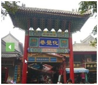
Guerreros de Terracota · Templo 8 Inmortales · Murallas de Xi'an
Desayunar sobre las 07:30h e ir a cambiar dinero al Bank of China (la única entidad financiera que cambia divisas a los extranjeros). Llevar agua y polos de melocotón al complejo — hará mucho calor.
Ejército de Terracota — Mausoleo del Emperador Qin Shi Huang
En 247 a.C. el rey Qin Shi Huang inició la conquista de los 7 reinos vecinos, unificó China y se autoproclamó primer emperador. Ordenó construir a más de 700.000 artesanos un ejército de terracota para protegerle eternamente. Descubierto en 1974 por unos agricultores que excavaban un pozo. Recorrido: Exhibition Hall (exposición sobre la historia) → Cinema (película en 360° sobre la historia) → Pabellón 1 (el mayor, con trabajos arqueológicos activos en la parte trasera) → Pabellón 2 (fosos, corredores, estatuas reconstruidas) → Museo (carruaje tirado por cuatro caballos con su pigmentación original). Las estatuas expuestas representan solo el 20% del total descubierto. Tras la exposición al aire, los colores originales se pierden en 5 horas, por lo que se ha pospuesto seguir desenterrando hasta encontrar técnica de conservación.
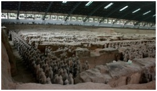
Templo de los 8 Inmortales 八仙庙
Los Ocho Inmortales son deidades de la mitología china que nacieron durante las dinastías Tang o Song. Dentro del templo está el Puente de Yu Xian: debajo de su arco hay una pequeña campana. Si la haces sonar tirando una moneda, estarás predestinado a tener una relación con el taoísmo y tu existencia será pacífica y afortunada.
Murallas de Xi'an
Las murallas más antiguas y mejor conservadas de China. Construidas por Hongwu en 1370 sobre los cimientos del Palacio imperial Tang. Forma rectangular con cuatro puertas dirigidas a los puntos cardinales. Muy bonitas de noche. Andar hasta la Puerta Este, bajar de la muralla e ir al hotel andando.
Xi'an → Yangshuo — Espectáculo Liu Sanjie
Del aeropuerto a Yangshuo: Taxi 300 yuanes / 80 km / 1h55
Al llegar: Reservar en hotel River View Hotel (11 Binjiang Rd): espectáculo nocturno "Impressions" (144 yuanes) y pesca nocturna con cormoranes para el día siguiente
River View Hotel
11 Binjiang Road · Yangshuo · También: contratar en la oficina de viajes del aeropuerto excursión arrozales Longsheng para el día 10 (700 yuanes) y guía privado para Guilin el día 9 (200 yuanes)
Yangshuo 阳朔 — Exploración del pueblo
Pequeño pueblo encajonado entre formaciones kársticas repartidas en arrozales. Posibilidades: mountain bike, navegar por el río Li, cuevas con estalactitas, bambú rafting, pesca con cormoranes. West Street: calle pavimentada con bloques de piedra, casas de estilo chino reconvertidas en cafés, hoteles, tiendas de artesanía, pintura, caligrafía, academias de kung-fu.
Espectáculo Liu Sanjie — "Impressions"
Espectáculo dirigido por Zhang Yimou (director de la ceremonia inaugural de los Juegos Olímpicos de 2008). Más de 600 figurantes entre las montañas kársticas del río Li. Combina agua, luz, sonido, vestuario, coreografía, animales y niños. Vestimentas típicas y cantos de la región.
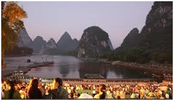
Guilin — Reed Flute Cave · Pico Solitario · Colina del Elefante · Crucero Río Li
Cueva de la Flauta del Junco 芦笛岩 — Reed Flute Cave
Túneles en el monte Guangming con estalactitas y estalagmitas iluminadas con luces de neón. Atracción de Guilin desde hace más de 1.200 años. La cueva tiene 180 millones de años. Más de 70 inscripciones en tinta desde el año 792 d.C. (dinastía Tang). El Palacio de Cristal del Rey Dragón sirvió de refugio para más de 1.000 personas durante la invasión japonesa de 1940. La guía lleva una barra de luz de metal que activa la iluminación al pasar de una cueva a otra.
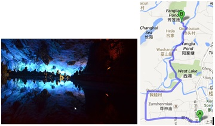
Pico Duxiu Feng — Pico de la Belleza Solitaria 独秀峰
152 m al norte del Palacio Jingjiang. Escalinata hasta la cumbre con buenas vistas de la ciudad. Al pie, el Palacio Jingjiang del Príncipe (Wang Cheng): construido en 1372 por el sobrino del emperador Ming Zhou Shouqian. Actualmente Universidad de Magisterio de Guangxi. Muralla con 4 puertas como la Ciudad Prohibida; alojó a 14 príncipes Ming. Ver también Fubo Shan (colina de contención de las olas) desde la cima y Qixing Gongyuan (Parque de las 7 estrellas) de lejos.
Colina de la Trompa de Elefante — Xiangbi Shan
Situada en la confluencia del Río Li y el Río de las Adelfas, parece un elefante bebiendo agua del río (50 m de altura). Con luna llena, la caverna se parece a una luna flotando sobre el agua. Encima de la colina: pagoda lamaísta de la dinastía Ming (13,6 m), llamada "la pagoda del florero". El elefante cargando el florero simboliza la paz y la felicidad.
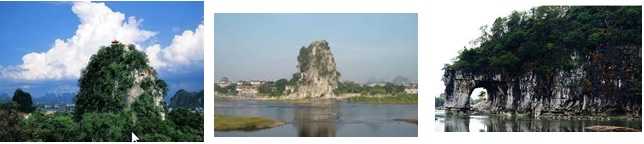
Navegación por el Río Li — De Yangdi a Xingping
El punto del embarcadero está representado en la parte posterior de los billetes de 20 yuanes. Alquilar una bamboo boat hasta las afueras de Xing Ping (370 yuanes la balsa, capacidad 6-7 personas). Antes de Xingping: el Chico Devoto de Guanyin y la Colina de la Pintura de los Nueve Caballos (saliente que representa caballos salvajes, aunque la mayoría solo ve 7). En Xingping: los paisajes más impresionantes del río. Buses locales a Yangshuo ~45 min, 8 yuanes (salen cuando se llenan · último a las 20:00h).
Terrazas de Arroz de Longsheng — Aldea Yao · Ping'an · Pesca nocturna
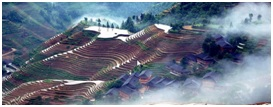
Aldea de Huang Luo — Minoría Yao
Hogar de la minoría étnica Yao, junto al río y rodeada de montañas y bosques. Para las mujeres Yao el pelo es símbolo de riqueza: solo se lo cortan una vez en la vida al cumplir los 16 años, de modo que no es raro encontrar mujeres con melenas de hasta 2 metros recogidas sobre la cabeza. Pasear por la aldea y los puestos callejeros (pañuelos y pashminas de colores). Esta etnia es famosa por sus magníficos bordadores, tejedores y tintoreros.
Terrazas de Arroz de Longsheng 龙胜梯田 — Espina del Dragón
Grandiosa obra de ingeniería de más de 700 años. Las montañas modeladas en forma de terrazas permiten la irrigación mediante un sistema de canales desarrollado por la etnia Zhuang. A finales de julio los arrozales muestran su verde más intenso. Comer en restaurante local de la excursión y probar el arroz cocinado en bambú, la especialidad local. Subir hasta el Mirador 1 "Music from Paradise" para unas vistas impresionantes de todos los arrozales escalonados.
Pesca Nocturna con Cormoranes
Excursión reservada previamente en el hotel. Técnica ancestral de pesca del río Li. Cenar en el restaurante del hotel (recomendable pescado a la cerveza) y pasear por la West Street.
Yangshuo → Hangzhou — Impressions West Lake
Del aeropuerto a Hangzhou: Bus 20 yuanes (lado Norte, salida 5) → 1h hasta la estación de trenes · Bajarse en la 2ª parada · Taxi al hotel 40 yuanes
Huachen International Hotel 杭州华辰国际饭店
25 Pinghai Road, Shangcheng · Entradas del "Impression of West Lake" reservadas por mail (260 yuanes)
Impressions West Lake 印象西湖
Espectáculo sobre el Lago Yue (Yue Lake). Dirigido por Zhang Yimou. Música de Kitaro, canción tema "The Rain of West Lake". Más de 300 actores con vestidos tradicionales se deslizan sobre el lago iluminados por colores especiales. Volver al hotel andando rodeando el lago (3,6 km por arriba).
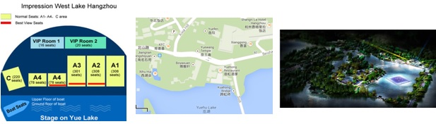
Hangzhou — Fei Lai Feng · Templo Lingyin · Tumba Yue Fei · Lago Oeste
Fei Lai Feng — El Pico que Voló Hasta Aquí
209 m de altura, piedra caliza pura. El monje indio Huili creyó hace 1.600 años que el pico había volado desde la India por su forma. Las cuevas albergan ~330 estatuas de piedra del s. X al XIV, incluyendo el famoso Buda Riente sentado en el acantilado. Templo Lingyin (fundado en 326): uno de los 10 templos budistas más famosos de China. Restaurado en 1974. La Gran Sala del Gran Héroe tiene una estatua de Buda de 24,8 m tallada en 24 secciones de madera de alcanfor y cubierta con pan de oro. La Sala de los 500 Arhats tiene 500 estatuas de bronce, todas distintas. Pico Norte: punto más alto de la ciudad y mirador sobre el Lago Oeste (funicular).
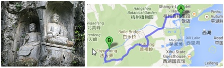
Yue Fei Mu — Tumba del General Yue Fei
Tumba del general Song Yue Fei (1103-1142), héroe nacional por luchar contra los Jin. Acusado falsamente y ejecutado. El emperador Gao Zong lo exoneró en 1163 y ordenó enterrarle en este mausoleo. Gran estatua del general con sus palabras: "devolvednos las montañas y los ríos". La tradición dictaba que los turistas escupieran sobre las estatuas de hierro de Qin Hui y su esposa (ahora prohibido).
Lago Oeste 西湖 — West Lake
Coger un barco para ir al otro extremo (40 yuanes, 30 min). Una de las maravillas paisajísticas de China (8 km²). Dique Su (2,7 km, 6 puentes de piedra, nombrado por el poeta Song Su Dongpo): empieza al sur en Nan Shan Rd y acaba al norte en Bei Shan Rd. Jardín Huagang, los 3 estanques reflejando la luna (3 pagodas sobre las aguas), e isla Xiaoying (4 estanques con pabellones de 1611). Ver también de lejos la Pagoda de las Seis Armonías (Liuhe Ta, forma octogonal, 59,89 m) y la Leifeng Pagoda (reconstruida en 2002, 1.400 toneladas de acero y cobre). Volver al hotel 3 km rodeando el lago. Comprar regalos.
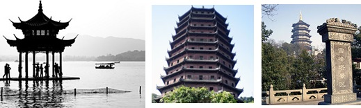
Hangzhou → Shanghai — Pudong · People's Square · Bund · Crucero Huangpu
A pie del hotel: Metro línea 2 → 10 estaciones → Nanjing Road East (salida 3) → 400 m por Henan Middle Road → Hotel Shanghai Fish Inn Bund, 369 Middle Henan Rd
A Pudong: Metro línea 2 (Lujiazui, salida 1) · 2 estaciones desde el hotel
Shanghai Fish Inn Bund
369 Middle Henan Road · Cambiar euros en un Bank of China al lado del hotel
Pudong — Shanghai WFC + Torre Jin Mao + Oriental Pearl TV
Shanghai World Financial Center (el "abrebotellas"): 492 m, el más alto de Shanghai. 3 plantas visitables: planta 94 (423 m, bar panorámico), planta 97 (439 m, techo abierto), planta 100 (474 m, mirador principal con partes de cristal en el suelo). Ascensor a 10 m/s. Torre Jin Mao (ver por fuera): 420,5 m, forma de tronco de bambú. Hotel Grand Hyatt entre pisos 56-87. Torre Oriental Pearl TV: 468 m, icono de Pudong (1995), segunda esfera 100 yuanes (incluye Museo de Historia), esfera superior giratoria a 263 m.
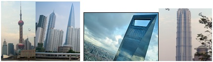
People's Square — Plaza del Pueblo 人民广场
Centro administrativo de Shanghai. Durante el colonialismo británico fue el hipódromo. Museo de Shanghai (gratuito, más de 120.000 piezas de 8.000 años de historia). Gran Teatro de Shanghai y Auditorio. Renmin Park: pequeño oasis con jubilados jugando al backgammon.
El Bund 外滩 — Paseo nocturno
Paseo de 2 km por la orilla oeste del río Huangpu, frente a Pudong. La arquitectura de finales del s. XIX y principios del XX (puerto franco británico) evoca una ciudad europea clásica. "Wall Street de Oriente". Edificios principales: Aduana (1927, reloj inglés), Charging Bull (copia del Ranging Bull de Wall Street), Estación Meteorológica (48,8 m, antes faro), Monumento a los Héroes (3 pilares de 60 m, guerra del Opio, 1994) y Peace Hotel (1930, tejado verde, el más emblemático).
Crucero por el Río Huangpu
El río Huangpu separa Shanghai en dos partes y confluye con el Yangtsé en la ciudad. Sus 400 m de anchura en el tramo más importante separan el Bund (Shanghai colonial) de Pudong (ultramoderno). El recorrido sigue la forma de U del río hacia el norte.
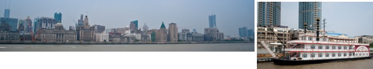
Suzhou — Pan Men · Templo de Confucio · Jardín del Administrador Humilde
10 millones de habitantes. Capital de la cultura Wu. Fundada hace 2.500 años, fue capital del rey Helu de Wu en el 514 a.C. Los productos locales más famosos: bordados de doble cara sobre seda (~300 RMB), abanicos de seda y madera de sándalo (+400 RMB), tallas de madera, perlas, teteras y prendas de seda.
Pan Men — La Puerta del Agua + Pagoda Ruiguang
La puerta más antigua de Suzhou. Última puerta marítima y terrestre perfectamente restaurada conforme a la original bajo la dinastía Yuan (1276-1368). Sistema de doble rastrillo, festones con cañones (Qing) y pabellón de vigilancia. Pagoda de Ruiguang: 7 pisos, 53,57 m (en 1978 se encontraron obras de literatura budista y estatuas). Puente Wumen (granito, s. XIX): el más elevado de la ciudad, permite el paso de veleros (50 pasos cada ladera). Paseo en barca tradicional incluido con remeros que cantan.
Templo de Confucio
Gran hall tras la estatua de Confucio, rodeado de jardines perfectamente cuidados. Escondido entre sus muros el más interesante mercado informal de artesanía y antigüedades de Suzhou. Precaución con las imitaciones.
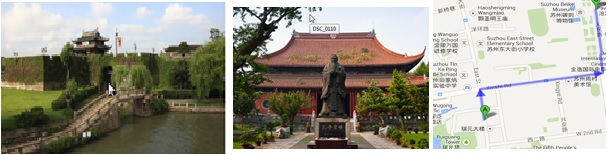
Jardín del Administrador Humilde — Zhuozheng Yuan
Construido en la dinastía Ming por un alto funcionario jubilado en el s. XVI. Vegetación, estanques, casetas y carpas en ~5 hectáreas. Dividido en 3 partes: Este (acceso), Media (la más exquisita, con la técnica de "visión prestada desde la distancia", pagoda visible a 1 km) y Oeste (Salón de los 36 Patos Mandarines, Salón de las 18 Camelias, jardín de bonsáis con ~700 ejemplares). Al salir: tiendas con recuerdos.
Pagoda del Templo Norte — Beisi Ta 北寺塔
Construida durante la dinastía Song sobre cimientos que podrían ser de la era de los 3 reinos (220-265 d.C.). Ha sufrido diversos incendios. Sus 9 pisos miden 76 m. Superviviente de un antiguo templo, rodeada de un agradable jardín. Ver sin entrar de camino a la estación de tren.
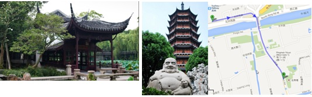
Shanghai — Templo Buda de Jade · Museo · Ciudad Vieja · Yu Yuan · Circo ERA
Templo del Buda de Jade 玉佛寺 — Yu Fo Si
Construido en 1882 para albergar dos estatuas de Buda en jade traídas de Birmania por el monje Hui Gen. El más importante: buda recostado (piso inferior) y buda sentado de jade blanco de 1,9 m, 3 toneladas, con incrustaciones de piedras preciosas (piso superior, 10 yuanes adicionales, sin fotografías). En febrero muy concurrido: 20.000 budistas para el Año Nuevo Lunar.
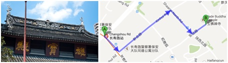
Museo de Shanghai + Museo de Planificación Urbana
Museo de Shanghai: creado en 1952, uno de los más importantes de China. Bronce, cerámica, muebles, monedas y sellos. Museo de Planificación Urbana (200 m al norte, 30 yuanes, ma-ju 9–17h): maqueta de 600 m² con toda la ciudad (día y noche), fotos antiguas, película en pantalla circular 360° (cada hora), recreación de calle de Shanghai de 1930. En la taquilla venden billetes reserva para el tren Maglev (50 yuanes — comprarlos).
Ciudad Vieja + Jardín Yu Yuan + Salón de Té Huxinting
Ciudad Vieja: zona histórica con edificios tradicionales y el Yuyuan Market. Forma circular original, amurallada y rodeada de foso (contra piratas japoneses). Salón de té Huxinting (8:30–21h): uno de los más famosos de China, icono de la antigua Shanghai, situado en el centro de un estanque con el "Puente de las 9 Curvas" (los impares son números de buena suerte). Jardín Yu Yuan (218 Anren Road, 8:30–17:30h, 40 yuanes): jardín privado de la dinastía Ming terminado en 1577 (20 años de trabajos), 20.000 m². Dividido por muros coronados por cuerpos de dragón. Puntos de interés: Gran Rocalla (14 m, mejores vistas), Piedra de Jade (3,3 m, el mayor tesoro), Jardín Interior (1709, rocas, pabellones, estanques y flores).
Shanghai Circus World — Espectáculo ERA
Espectáculo de circo de clase mundial en el Shanghai Circus World. Metro: desde Yuyuan Garden → línea 9 (1 parada) → North Nanjing Rd → transbordo línea 2 → People's Square → transbordo línea roja → 6 estaciones hasta Shanghai Circus World.
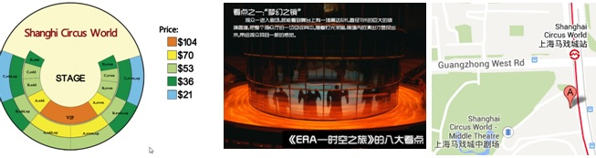
Shanghai → Zúrich → Barcelona — Tren Maglev
Tren Maglev — Levitación Magnética
Levantarse a las 05:30h. Taxi a las 06:30h a la estación Longyang. Coger el Maglev de las 07:00h (velocidades: 6:45-8:45h → 300 km/h / 9:00-10:45h → 430 km/h). El único tren de levitación magnética en servicio comercial del mundo. En poco más de 7 minutos recorre los 30 km entre el aeropuerto de Pudong y la estación Longyang Road, alcanzando una velocidad máxima de 431 km/h. Funciona por repulsión y atracción de campos magnéticos, elevándose unos centímetros sobre las vías.
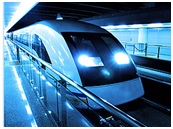
Vuelo ZRH → BCN: Salida 20:50h · Llegada T1 Barcelona 22:35h
🇨🇳 Fin del viaje